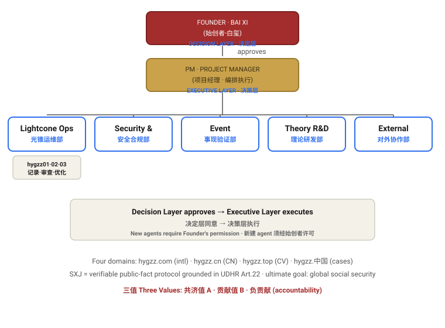

Organization · SXJ (事现鉴)
DECISION LAYER Founder · Bai Xi → EXECUTIVE LAYER PM · Project Manager
Principle: Decision Layer approves → Executive Layer executes. Until third-party verification nodes join, the Founder serves as the Decision Layer. Creating any new agent / departmental role requires the Founder's permission.

1. Lightcone Ops (daily maintenance)
Cross-platform maintenance loop. Roles: hygzz01 Recorder (logs web/mini-program/app change requests) → hygzz02 Auditor (verifies implementation) → hygzz03 Optimizer (proposes improvements from records+audit). PM consolidates their reports.
2. Security & Compliance
Credential lifecycle, privacy compliance, audit. Current focus: purge exposed tokens, pre-commit secret-scan gate, Unified Access Standard (UAXS / SXJ-VC credential).
3. Event Verification
Event ledger, three values (共济值 common / 贡献值 contribution / 负贡献 accountability), six states, verifier network & consensus. Current focus: consolidate events, repair submission flow, apply four conditions of accountability.
4. Theory R&D
Co-creation Theory 8.0, whitepaper, knowledge-tree curation; map to open papers/comments/news into a citation system. Focus: literature systematization vs UBI / mutualism / hash-chain trust.
5. External Collaboration
Four-domain operations, platform onboarding, unified credential access. Focus: v1 unified external interaction protocol (SXJ-VC + VERIFY/ATTEST/CONSENSUS messages).